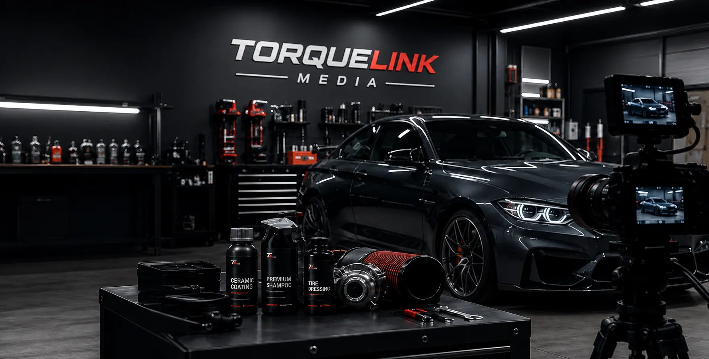
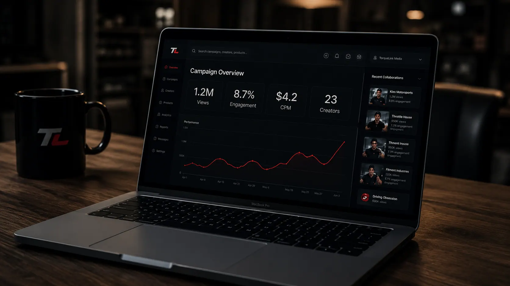
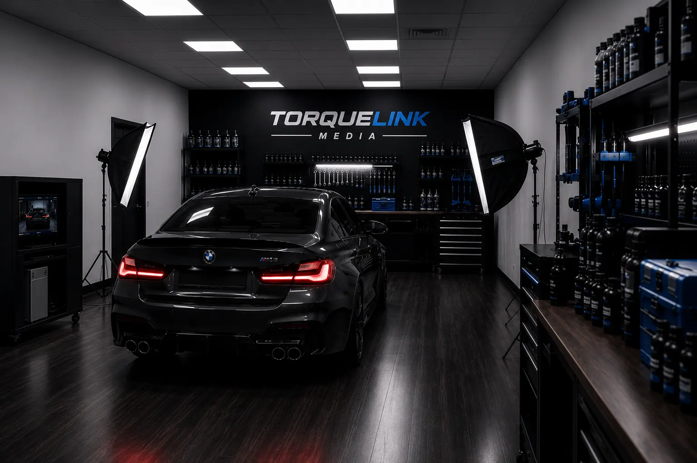

Creator sourcing and matching
Identify relevant automotive YouTube creators by audience fit, content quality, product context, and brand suitability.
Automotive creator sponsorships
Precision YouTube sponsorships engineered for automotive brands.
We help aftermarket, car-care, tools, accessories, and hands-on automotive product companies reach the right YouTube audiences through focused creator partnerships.
Campaign context


Services
Identify relevant automotive YouTube creators by audience fit, content quality, product context, and brand suitability.
Run structured creator outreach, collect availability, manage rate discussions, and align deliverables before commitments are made.
Keep products, talking points, timelines, approvals, tracking links, and content requirements moving without adding operational drag.
Provide practical post-campaign summaries that help brands understand delivery, audience response, and next sponsorship opportunities.
Campaign lens
The best sponsorships feel native to the channel while still giving the product enough room to be understood.
YouTube remains one of the strongest places for automotive products because viewers can see parts installed, tools used, finishes tested, and real-world problems solved. The right creator can do more than create awareness; they can show why a product earns a place in the garage.
TorqueLink Media is a specialist sponsorship partner for automotive product brands that need credible creator fit, practical campaign support, and clear coordination from outreach through reporting. The focus is narrow by design: products that benefit from demonstration, trust, installation context, tool use, and enthusiast attention.

Clarify product category, audience, goals, budget range, timing, and creator criteria.
Map relevant channels and prioritize creators with strong automotive content fit.
Manage outreach, rates, deliverables, product logistics, approvals, and campaign dates.
Summarize delivery and performance signals so the next campaign starts smarter.
For product-led automotive brands
Share a few details about your product category and campaign goals. TorqueLink Media will respond with next steps for a practical sponsorship discussion.